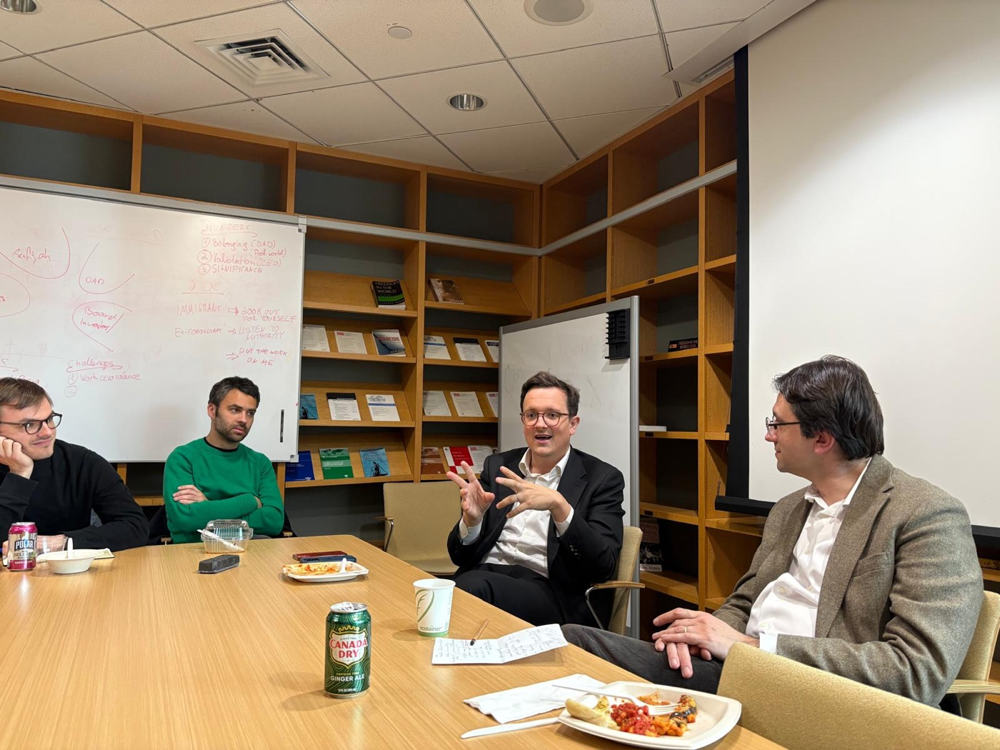
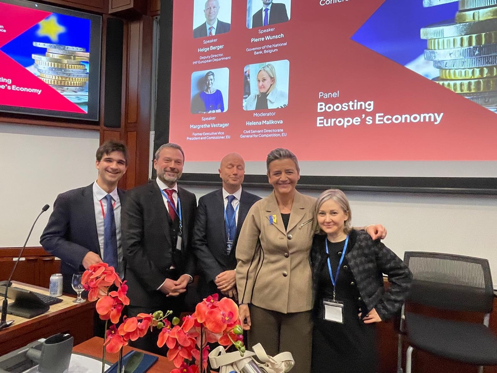
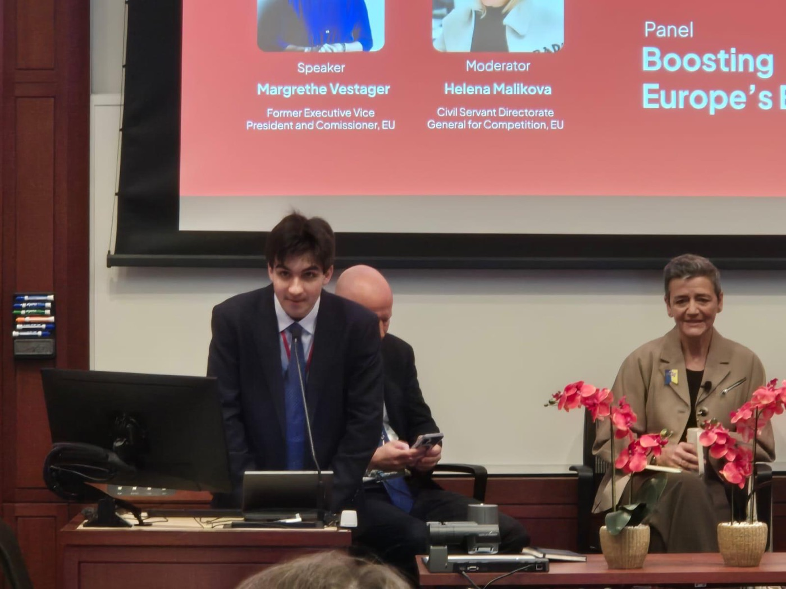
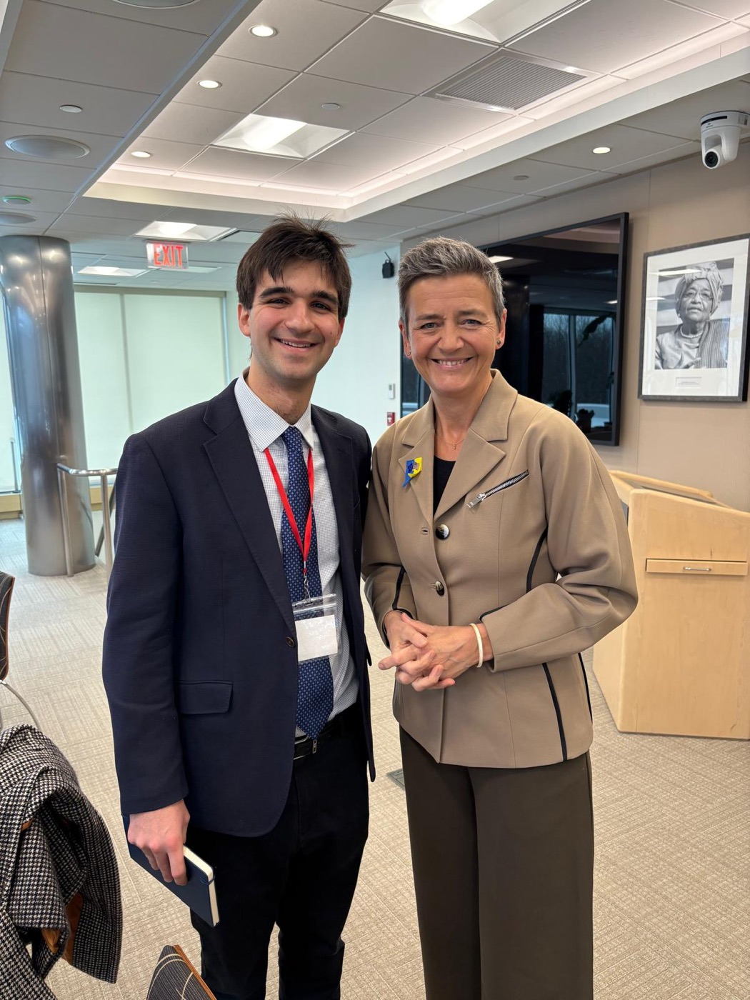
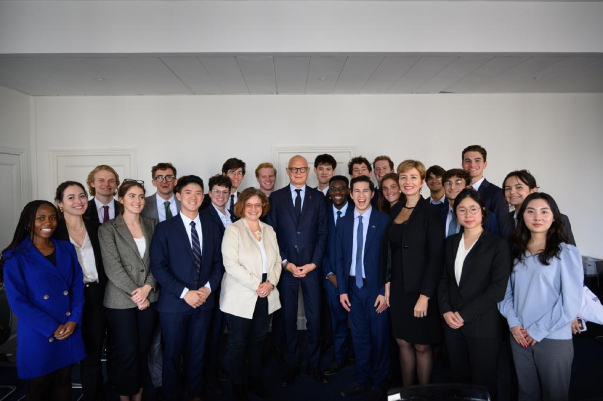
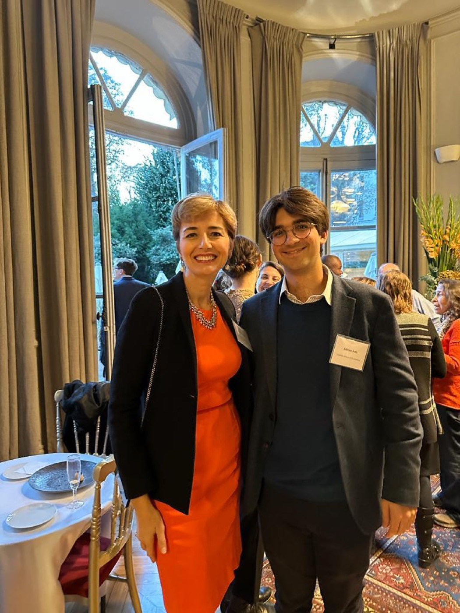

Panels, discussions and interviews I have organised, hosted or taken part in.
The future of French democracy
Harvard Kennedy School · April 2025
Hosted a discussion with Ludovic Subran (Chief Economist of Allianz and Senior Fellow at the Harvard Kennedy School) and Vlad Perju (Professor of Law, Boston College Law School) on the future of French democracy.

Ludovic Subran and Vlad Perju at the Harvard Kennedy School.
Boosting Europe’s Economy: Strategies for Competitiveness
Panel with Margrethe Vestager (former Executive Vice-President of the European Commission), Pierre Wunsch (Governor of the National Bank of Belgium) and Helge Berger (Deputy Director, IMF European Department), moderated by Helena Malikova (Directorate-General for Competition, European Commission).

With Helge Berger, Pierre Wunsch, Margrethe Vestager and Helena Malikova.

Opening the panel.

With Margrethe Vestager after the panel.
Princeton LISD International Policy Associates: Paris and Berlin
Liechtenstein Institute on Self-Determination, Princeton School of Public and International Affairs · October 2023
High-level meetings in Paris and Berlin with government, think-tank and private-sector officials, including a discussion on foreign policy with former Prime Minister Édouard Philippe at the Horizons headquarters in Paris. Read the LISD announcement.

With Édouard Philippe at the Horizons headquarters, Paris.

With Nadia Crisan, Executive Director of the Liechtenstein Institute on Self-Determination at Princeton.
In conversation with General Benoît Puga
London School of Economics
Interview with Army General Benoît Puga, former Chief of the Military Staff of the President of the French Republic (2010–2016) and Grand Chancellor of the Legion of Honour (2016–2023).